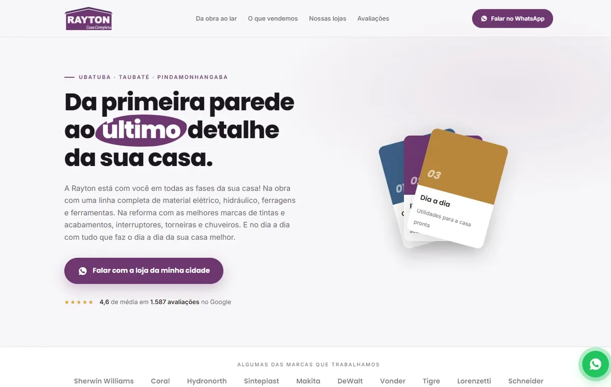

01
Entregue e no ar
Rayton Casa Completa
Substituiu um site feito em Canva. Publiquei em servidor Windows/IIS na Locaweb: precisei registrar os tipos MIME de .webp e .woff2, que o servidor não serve por padrão, e configurar um redirecionamento 301 do endereço antigo para não perder quem vinha do Google.
HTML · CSS · JavaScript · JSON-LD · IIS
